DCDT Report: Single-Loop
| Project Name | dab_pspo |
| Date | 3/1/2024 |
| Time | 17:34.07 |
Single Loop
Digital z-Domain
 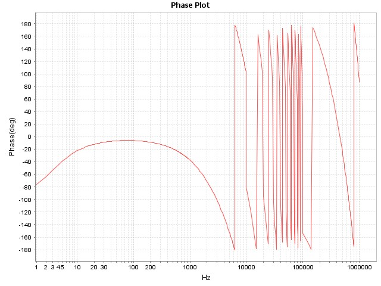
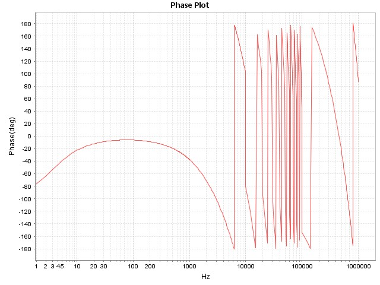Analog s-Domain
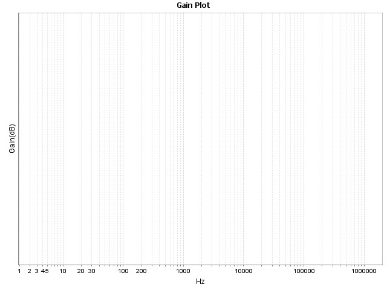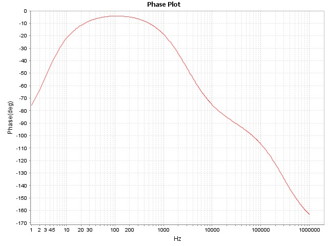Digital Nyquist
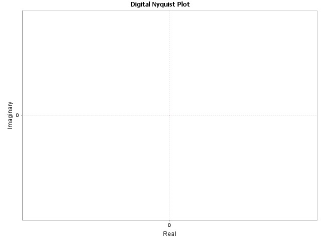Digital Root Locus
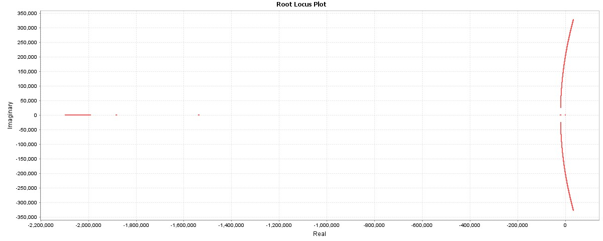Digital Step Response
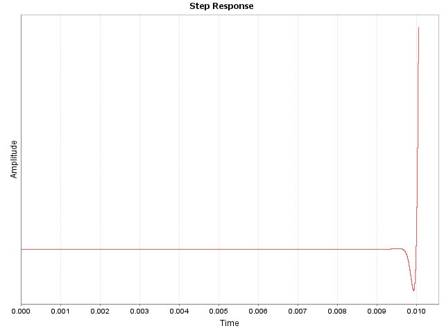Compensator Type: 2P2Z
Inputs
| Entry | Value |
|---|
| Pole 0 | 1.2000e+01 Hz |
| Pole 2 | 3.0000e+03 Hz |
| Zero 1 | 4.0000e+00 Hz |
| Gain(Kdc) | 1.000 |
| Warp | false |
| PWM Frequency | 1.0000e+04 |
| PWM Sampling Ratio | 1 |
| Sampling Frequency | 1.0000e+04 |
| PWM Max Resolution | 4.0000e-08 |
| Computational Delay | 1.0000e-06 |
| Gate Drive Delay | 5.0000e-09 |
| Control Output Min. | 0 |
| Control Output Max. | 32767 |
| Kuc Gain | 3.3466e+00 |
| Use Kuc Gain | false |
PWM Calculations
| Name | Value |
|---|
| Bits of Resolution | 11.288 |
| Gain | 4.002e-04 |
Digital Compensator Coefficients
| Name | Value | Normalized | Q15 | Hex |
|---|
| a1 | 1.030 | 0.706 | 23147 | 0x5A6B |
| a2 | -0.030 | -0.020 | -665 | 0xFD67 |
| b0 | 1.457 | 1.000 | 32764 | 0x7FFC |
| b1 | 0.004 | 0.003 | 82 | 0x0052 |
| b2 | -1.454 | -0.997 | -32682 | 0x8056 |
s-Domain
Wp0 Wp2(Wz1 + s)
H(s) = Kdc X --- X ------------
s Wz1(Wp2 + s)
7.54e+01 1.88e+04(2.51e+01 + s)
H(s) = 1.000 X -------- X ----------------------
s 2.51e+01(1.88e+04 + s)
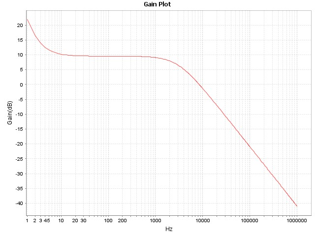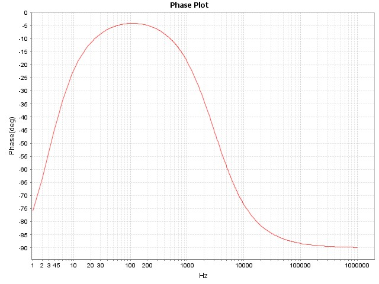z-Domain
u(z) B0 + B1z^(-1) + B2z^(-2)
H(z) = --- = ------------------------
e(z) A0 - A1z^(-1) - A2z^(-2)
(1.457) + (0.004)z^(-1) + (-1.454)z^(-2)
H(z) = ---------------------------------------------
1 - (1.030)z^(-1) - (-0.030)z^(-2)
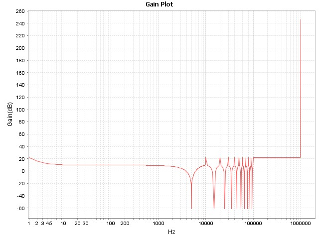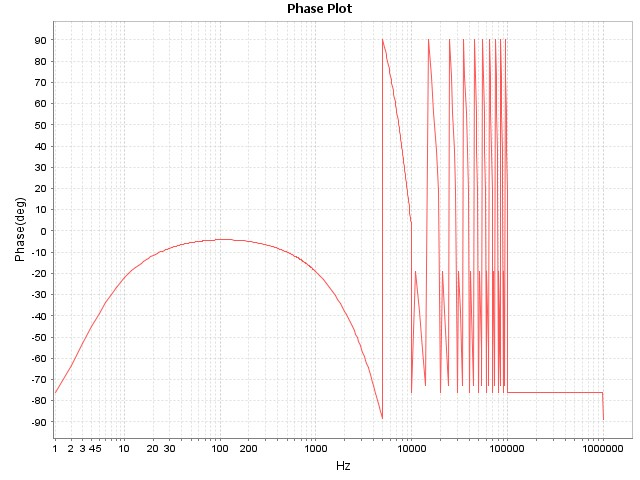Plant Type Hsys: Poles & Zeros
Inputs
| Entry | Value |
|---|
| Pole 1 | 0.0000e+00 Hz |
| Pole 2 | 0.0000e+00 Hz |
| Pole 3 | 0.0000e+00 Hz |
| Pole 4 | 0.0000e+00 Hz |
| Pole 5 | 0.0000e+00 Hz |
| Zero 1 | 0.0000e+00 Hz |
| Zero 2 | 0.0000e+00 Hz |
| Zero 3 | 0.0000e+00 Hz |
| Zero 4 | 0.0000e+00 Hz |
| Zero 5 | 0.0000e+00 Hz |
| Gain(Kdc) | 1 |
s-Domain
Kgain *
Hsys(s) = -----------
(s + wp1)
1.0 *
Hsys(s) = ------------------
(s + 0.0000e+00)
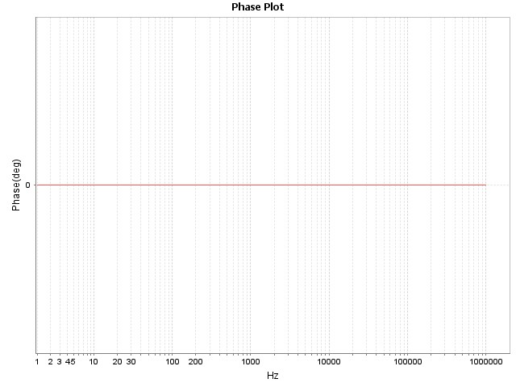Feedback Type Hfb: Fixed Gain
Inputs
| Entry | Value |
|---|
| Gain | 6.020e-01 |
| Bandwidth | 3.000e+05 |
| ADC Resolution | 12-bit |
| ADC Conv. Latency | 3.00e-07 |
| ADC Operating Voltage | 3.30 |
| Output | 5.00 |
ADC Calculations
| Entry | Value |
|---|
| Sense Output | 3.010 |
| Counts Sense | 3736 |
| Pre-Shift | 3 |
s-Domain
BW(2pi)
H(s) = Kvadc X -----------
BW(2pi) + s
1.885e+06
H(s) = 0.602 X -------------
1.885e+06 + s
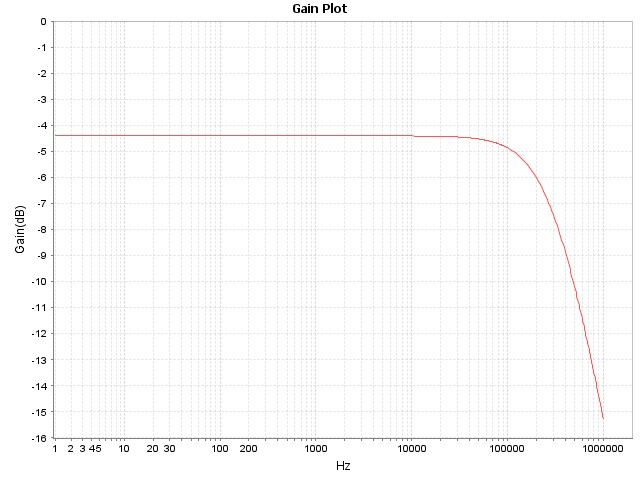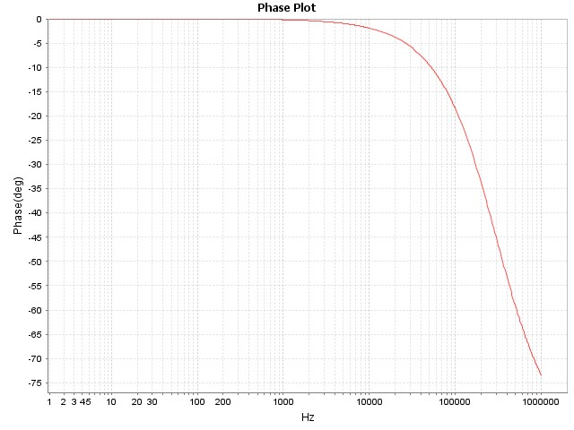